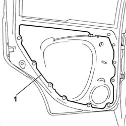

7010A04 rear side door water guard protection - r r or arrange with door panel removed
- Path
- Procedures > 70 FITTINGS > 7010 PASSENGER COMPARTMENT REAR SIDE DOORS > 7010A rear side door assembly > 7010A04 rear side door water guard protection - r r or arrange with door panel removed
- Kind
- repair procedure (removal / refitting; the operation number is the code)
- Applies to
- all engines; all production periods
- Interactive page
- https://sloeber94.github.io/elrnDB-fPnd/en/#/2753083
Applies to: all engines; all production periods
 Removing
Removing
 Refitting
RefittingDisconnect the battery negative terminal.
5570T93 REAR SIDE LOUDSPEAKER. (one), left or right - R.R. with rear door panel or wing. removed
1. Cut the sealant bead and remove the water shield.

Applies to: all engines; all production periods
Refitting
RemovingThoroughly clean the door flrame from adhesive residues.
Check that the new seal is intact and not torn.
Secure the loudspeaker wiring and the link from the inner handle to the door lock in the specific seatings in the water shield.
Fit the new water shield, making sure that the adhesive bead adheres to the door frame.
5570T93 REAR SIDE LOUDSPEAKER. (one), left or right - R.R. with rear door panel or wing. removed
Connect the battery negative terminal.